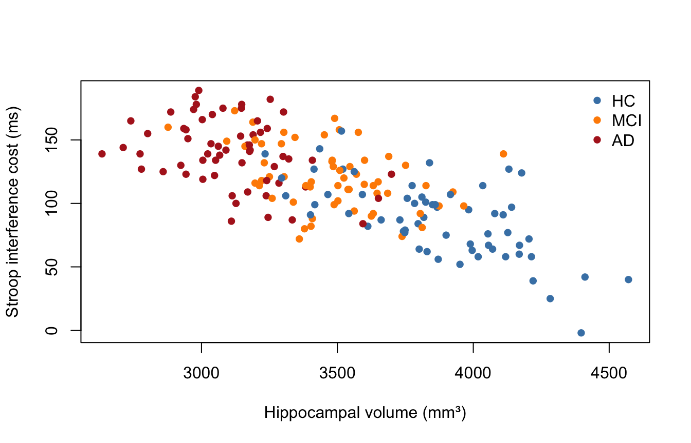
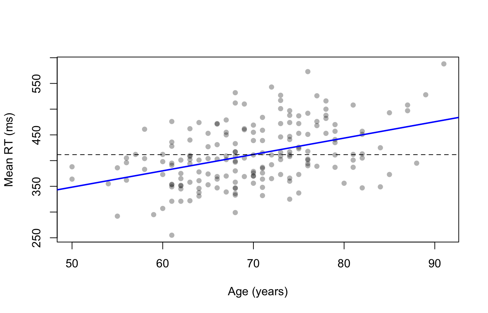

memclinic <- read.csv("data/memclinic.csv")
memclinic$group <- factor(memclinic$group, levels = c("HC", "MCI", "AD"))4 · Appendix — doing it again, and doing it faster
Statistics for brain and cognitive sciences (CN2)
Note
Nothing here is examinable. It is here because the answer to “but where does that number actually come from?” is worth having written down.
Loops
for (g in levels(memclinic$group)) {
m <- mean(memclinic$moca[memclinic$group == g])
cat(g, "mean MoCA:", round(m, 1), "\n")
}HC mean MoCA: 28.4
MCI mean MoCA: 25.2
AD mean MoCA: 19.2 while repeats until a condition fails; repeat runs until you break:
x <- 0
while (x < 3) { x <- x + 1 }
x[1] 3x <- 0
repeat { x <- x + 1; if (x == 3) break }
x[1] 3next skips the rest of one iteration, break leaves the loop entirely.
Preallocate
Growing a vector inside a loop makes R copy the whole thing each time:
out <- numeric(length(levels(memclinic$group))) # room reserved up front
for (i in seq_along(levels(memclinic$group))) {
g <- levels(memclinic$group)[i]
out[i] <- mean(memclinic$moca[memclinic$group == g])
}
round(out, 1)[1] 28.4 25.2 19.2Note seq_along() rather than 1:length(), for the reason given in the session 01 appendix.
But you rarely need a loop
Everything above is one line:
round(tapply(memclinic$moca, memclinic$group, mean), 1) HC MCI AD
28.4 25.2 19.2 In R a loop is usually a sign that a vectorised function exists and you have not found it yet.
The apply family
vars <- c("age", "moca", "hippo_vol_mm3")
sapply(memclinic[, vars], mean) # simplifies to a vector age moca hippo_vol_mm3
69.87222 24.25000 3484.96111 sapply(memclinic[, vars], range) # ... or a matrix age moca hippo_vol_mm3
[1,] 50 16 2634
[2,] 91 30 4571str(lapply(memclinic[, vars], mean)) # always a listList of 3
$ age : num 69.9
$ moca : num 24.2
$ hippo_vol_mm3: num 3485Filter() keeps the elements matching a test:
names(Filter(is.numeric, memclinic))[1] "age" "educ_years" "moca" "hippo_vol_mm3"
[5] "stroop_cost_ms" "rt_mean" "csf_ptau" And do.call() calls a function with a list of arguments — the idiom do.call(rbind, list_of_data_frames) stacks many tables into one:
pieces <- lapply(levels(memclinic$group), function(g) {
d <- memclinic[memclinic$group == g, ]
data.frame(group = g, n = nrow(d), mean_moca = round(mean(d$moca), 1))
})
do.call(rbind, pieces)Pipes
A pipe passes the thing on its left into the function on its right, so that a sequence of steps reads left to right instead of inside out.
sqrt(mean(memclinic$moca)) # inside out[1] 4.924429memclinic$moca |> mean() |> sqrt() # native pipe, R 4.1+[1] 4.924429The lecture slides teach %>% from magrittr, which is what the tidyverse uses and what you will see in WinterBreakExercises.R:
library(magrittr)
memclinic$moca %>% mean %>% sqrtThe two behave the same for straightforward uses like these.
Graphics, in more depth
Colour and plotting characters
plot(memclinic$hippo_vol_mm3, memclinic$stroop_cost_ms,
pch = 16,
col = c("steelblue", "darkorange", "firebrick")[memclinic$group],
xlab = "Hippocampal volume (mm³)",
ylab = "Stroop interference cost (ms)")
legend("topright",
legend = levels(memclinic$group),
col = c("steelblue", "darkorange", "firebrick"),
pch = 16,
bty = "n")
Indexing a colour vector by a factor works because a factor is stored as the integers 1, 2, 3 — the trap from practical 2, used deliberately.
With many overlapping points, make them transparent:
plot(memclinic$age, memclinic$rt_mean,
pch = 16, col = adjustcolor("black", alpha.f = 0.3),
xlab = "Age (years)", ylab = "Mean RT (ms)")
abline(lm(rt_mean ~ age, data = memclinic), col = "blue", lwd = 2)
abline(h = mean(memclinic$rt_mean), lty = 2) # horizontal reference line
Saving a figure
png("moca-by-group.png", width = 1600, height = 1200, res = 200)
boxplot(moca ~ group, data = memclinic, xlab = "Diagnosis", ylab = "MoCA")
dev.off() # REQUIRED -- this is what writes the file
pdf("moca-by-group.pdf", width = 7, height = 5)
boxplot(moca ~ group, data = memclinic)
dev.off()dev.off() closes the device. Until you call it, the file is incomplete.
Warning
Several lecture scripts call dev.off() at the top, before any device is open, which gives
Error in dev.off() : cannot shut down device 1 (the null device)It is harmless — it means there was nothing to close. Carry on.
Reshaping, the other ways
reshape() leaves a note to itself about how it reshaped, which lets it go back:
stroop <- read.csv("data/stroop-rm.csv")
long <- reshape(stroop, direction = "long",
varying = c("rt_congruent", "rt_neutral", "rt_incongruent"),
v.names = "rt", timevar = "condition",
times = c("congruent", "neutral", "incongruent"), idvar = "id")
names(attributes(long))[1] "row.names" "names" "class" "reshapeLong"head(reshape(long, direction = "wide"), 2)The modern alternative is tidyr:
long2 <- tidyr::pivot_longer(stroop,
cols = starts_with("rt_"),
names_to = "condition",
names_prefix = "rt_",
values_to = "rt")
head(long2, 3)nrow(long2)[1] 108Easier to read, and the same 108 rows.
merge(), in full
small <- memclinic[, c("id", "group", "moca")]
merged <- merge(stroop, small, by = "id")
nrow(merged)[1] 36When the key columns have different names, or you want to keep unmatched rows:
merge(a, b, by.x = "patient_id", by.y = "id")
merge(a, b, by = "id", all.x = TRUE) # keep every row of a (a "left join")
WarningMistakes can be silent
If the key is duplicated on both sides, merge() returns every matching combination — and your dataset silently grows:
a <- data.frame(id = c("P01", "P01"), visit = 1:2)
b <- data.frame(id = c("P01", "P01"), score = c(10, 20))
nrow(a); nrow(b)[1] 2[1] 2nrow(merge(a, b, by = "id")) # not 2[1] 4Two rows and two rows gave four. Always check nrow() before and after a merge. This is the most common way to corrupt a dataset without ever seeing an error.
Locale, encoding, and Excel
Sys.getlocale("LC_NUMERIC")In much of Europe the decimal separator is a comma and CSV files use ; as the field separator. read.csv2() expects exactly that:
read.csv("file.csv") # 1,234.5 and fields separated by ,
read.csv2("file.csv") # 1.234,5 and fields separated by ;This is the concrete reason for the warning in the codebook: open memclinic.csv in Excel on an Italian machine and it will offer to save it back with commas for decimals. Everything still looks like a number, and read.csv() will then read 20.3 as the text "20,3".
Writing data out
write.csv(memclinic, "my-version.csv", row.names = FALSE)row.names = FALSE matters. Without it R adds an unnamed first column of row numbers, which becomes a mysterious variable called X the next time anyone reads the file.